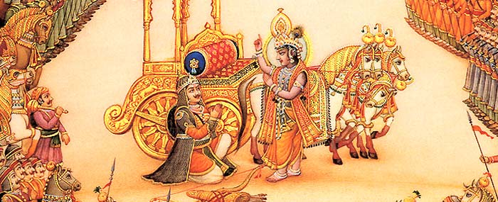

Gita Jayanti: Celebrating Bhagavad-gita
Gita-jayanti celebrates the speaking of Bhagavad-gita on the plains of Kurukshetra, 80km (50 miles) north of Delhi. Devotees of Krishna honour the occasion by reciting and discussing Bhagavad-gita, holding public lectures, and giving copies of the Gita as gifts. At Kurukshetra itself, thousands of pilgrims converge, at the spot where the Gita was spoken.

What is Bhagavad-gita?
The Bhagavad-gita is a classic scripture which no educated person should leave unread! It is India's best-known and most respected scripture.
Furthermore
This year Gita-jayanti occurs on 11 December in most parts of the world, with the exception of New Zealand (12 December). Check your local centre for the correct timings for your area, or download a Vaisnava calendar here.
Click here to read and listen to Bhagavad-gita online.
To get your own copy go to krishna.com (USA) or Bhaktivedanta Library Services (Europe)
Bhagavad-gita is the famous conversation between Krishna and Arjuna at the start of the battle of Kurukshetra. The discussion covers topics that thoughtful people have always pondered: the soul; the nature of God and our relationship with Him; matter and spirit, and how they interact; knowledge of the mind and senses; methods of self-realisation, and much besides.
The science of God as presented in Bhagavad-gita is a deep and fascinating subject, capable of engaging people of all interests and persuasions. Arjuna poses intelligent questions – the questions we would ask, if we met God! – and Krishna answers in kind. The result is a challenging and far-ranging philosophical discussion – not a series of injunctions and exhortations to be good and pious – that leaves us well-equipped to make informed decisions in life.
And the Gita satisfies the heart as well as the intellect – after all, its underlying theme is loving devotion to the Supreme Person. As Krishna speaks He charms us, not only by His words, but by His “all-attractive” personality. As He said Himself, several thousand years ago, this very week: “This knowledge is the king of education, the most secret of all secrets …It is everlasting and it is joyfully performed”.
So, pick up your own copy for Gita-jayanti or read online and enjoy!
Appreciating Bhagavad-gita
"The Gita can be seen as the main literary support for the great religious civilisation of India, the oldest surviving culture in the world."
Thomas Merton, Catholic theologian, monk and author
"a performance of great originality, of a sublimity of conception, reasoning and diction almost unequalled"
Lord Warren Hastings, the first Governor General of India
"I read the [Bhagavad-gita] for the first time when I was in my country estate in Silesia and, while doing so, I felt a sense of overwhelming gratitude to God for having let me live to be acquainted with this work. It must be the most profound and sublime thing to be found in the world."
"The most beautiful, perhaps the only true philosophical song existing in any known tongue ... perhaps the deepest and loftiest thing the world has to show."
Wilhelm von Humboldt, distinguished German scholar and linguist
"This is a most inspiring book; it has brought comfort and consolation in my life – I hope it will do the same to you. Read it."
Thomas Carlyle in a letter to Emerson
"I owed a magnificent day to the Bhagavat Geeta. It was the first of books; it was as if an empire spake to us, nothing small or unworthy, but large, serene, consistent, the voice of an old intelligence which in another age and climate had pondered and thus disposed of the same questions which exercise us."
Ralph Waldo Emerson
"In the morning I bathe my intellect in the stupendous and cosmogonal philosophy of the Bhagavat Geeta ... in comparison with which our modern world and its literature seem puny and trivial"
"the reader is nowhere raised into and sustained in a higher or rarer region of thought than in Bhagavad Geeta "
Henry David Thoreau
"The Gita is one of the clearest and most comprehensive summaries of the
Perennial Philosophy ever to have been made. Hence its enduring value, not
only for Indians, but for all mankind".
Aldous Huxley